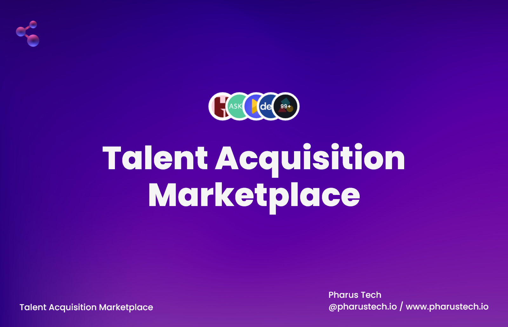
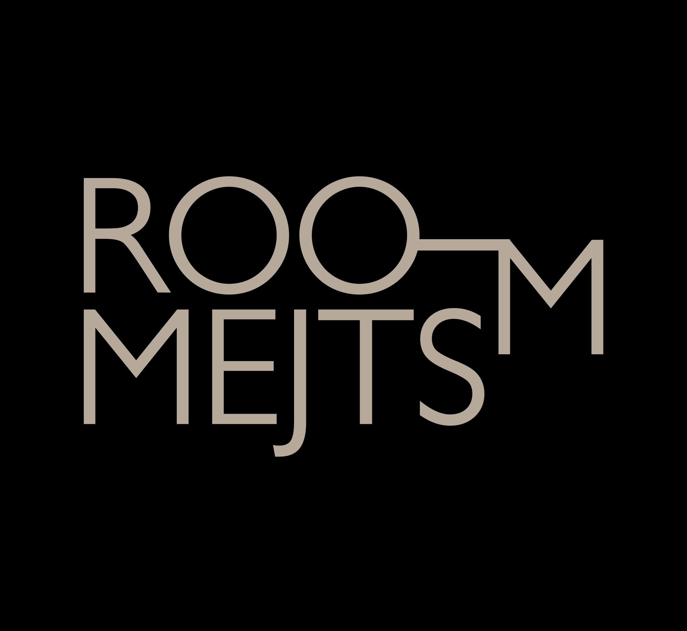
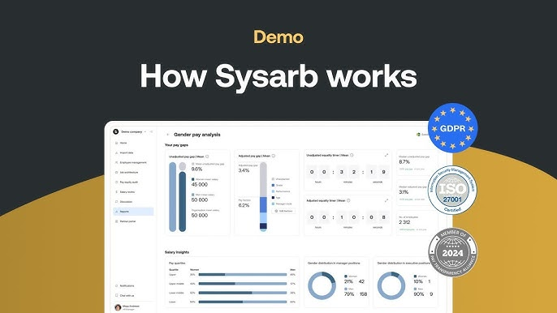
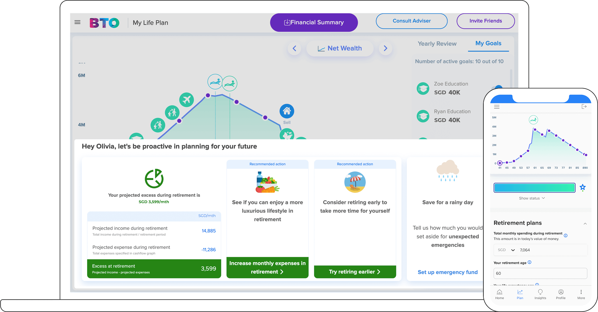

7+ years turning complex ideas into fast, seamless web apps. I pair solid frontend craft and backend systems work with AI-powered agentic workflows, so I stay on the architecture and review while the tooling handles the busywork and speeds up delivery.
Based in Dumaguete, Philippines, I've spent 7+ years building HR-tech SaaS, ML-integrated platforms, and data-rich dashboards for international teams. My craft spans Vue 3, Nuxt, React & Next.js on the frontend and Node.js, Hono & FastAPI on the backend, with PostgreSQL/Supabase for data and serverless deploys on Vercel and Cloudflare.
These days a lot of my hands-on work runs through AI hand-offs like Claude Code, MCP, and the Claude Agent SDK, while I stay focused on architecture, judgment, and review. I try to keep it pragmatic and reach for whatever tool actually fits the job.
Led full-stack delivery across international clients and grew from frontend SME into an AI-augmented full-stack engineer. Built HR SaaS, ML-integrated platforms, and dashboards with Vue/Nuxt, Node.js, FastAPI, and serverless infra, with Claude Code and MCP servers now driving a lot of the day-to-day work.
Spearheaded the AngularJS → Angular v12+ migration strategy by introducing reusable Web Components and modernizing onboarding portals, login systems, and admin dashboards to reduce technical debt.
Developed B2B websites and digital marketing solutions for laboratory and medical markets, delivering full-stack web applications with integrated graphic design and interactive media.
Agentic tooling paired with engineering judgment, not a replacement for it. I drive the architecture and review, and AI speeds up the delivery cycle.
I prototype UI in Claude Design and turn drafts into component structure, then hand implementation, refactors, and test scaffolding to Claude Code, while I keep driving the review and AI speeds up the cycle.
Custom MCP servers for Figma, Notion, and Slack expose design tokens, component specs, project schemas, and team context to AI tools, so suggestions stay grounded in the real codebase and design system instead of generic patterns.
Claude-powered features wired into real Vue/Nuxt and FastAPI backends, with structured outputs, tool use, and prompt caching tuned for production reliability and cost.

An HR-tech company specializing in AI-driven data analytics and talent acquisition tools. Formerly JobAgent, based in Stockholm.

Data-driven decisions for interior layouts, renovations, and construction planning, with software and automation that simplify how designers plan and optimize spaces.

A Sweden-based HR-tech company with nearly 20 years of experience, and one of Europe's leading voices in pay equity and pay transparency.

A free, user-friendly financial life-planning tool that lets anyone craft and visualize their financial future through simple, interactive simulations.
Sean has been my go-to person for frontend for four years. He's easy to work with, approachable, and explains things clearly, and he brings both real technical skill and a great attitude. I highly recommend him to any team looking for a strong, genuinely collaborative developer.
Sean combines strong technical skills with an impressive ability to adapt, collaborate, and deliver high-quality results. He approaches every task with ownership and attention to detail. I strongly recommend him. He's the kind of developer who lifts the people around him.